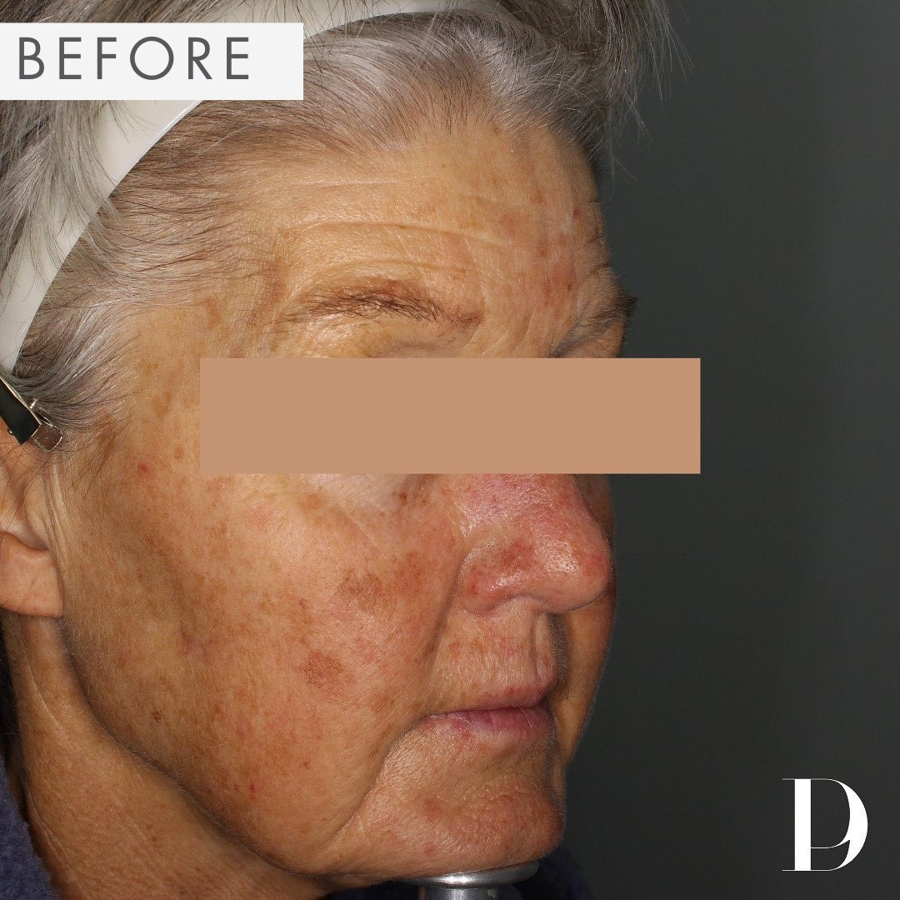
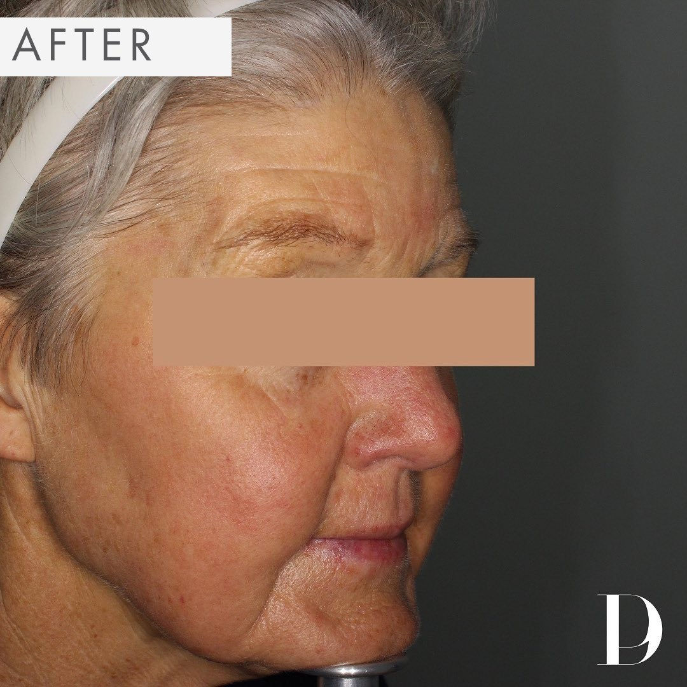

BOGO ($2,000 value): Reverse Sun Damage with Pacific Derm!
Exclusive Offer: For a limited time, enjoy our Buy 1 Treatment, Get 2nd Free! Each treatment typically valued between $2,000 and $4,000.


Sun exposure, environmental pollutants, and the natural aging process can take a toll on your skin, leading to uneven texture, discoloration, and fine lines. At Pacific Derm, we understand the impact of these factors and offer advanced solutions to help you reclaim your skin’s vitality and youthfulness.
Treatment Benefits:
- Smooth, Even Skin: Enjoy a radiant complexion that makes you feel confident.
- Non-Invasive: Experience transformative results without the need for surgery.
- Quick Results: Many clients see improvements within just a week.
- Effortless Experience: Treatments fit seamlessly into your busy life, lasting only 30-45 minutes.
Book by [insert booking deadline]
To take advantage of this amazing offer, please book your appointment by [insert booking deadline].
Ready to experience the rejuvenating power of Fraxel? Book Now!
How Fraxel Laser Works:
The Fraxel Laser utilizes advanced fractional technology to precisely target damaged skin while preserving surrounding tissue. This focused approach promotes the body’s natural healing process, leading to smoother, clearer skin without extensive downtime.
Treatment Types:
We offer two exceptional Fraxel treatments tailored to your skin's needs:
- Fraxel Re:Pair: This treatment is ideal for addressing significant skin damage. It combines CO2 laser technology with fractional treatment to effectively tighten loose skin and reduce wrinkles, particularly around the delicate eye area. Clients often appreciate the noticeable lifting effect and rejuvenated appearance.
- Fraxel Dual: A versatile option that uses two laser wavelengths to tackle both deep and superficial skin concerns. This treatment effectively reduces sun spots, age spots, and even scars, allowing for a fresher, more youthful complexion with minimal downtime.
Don't miss out on our Buy 1 Treatment, Get 2nd Free offer! Book Now!